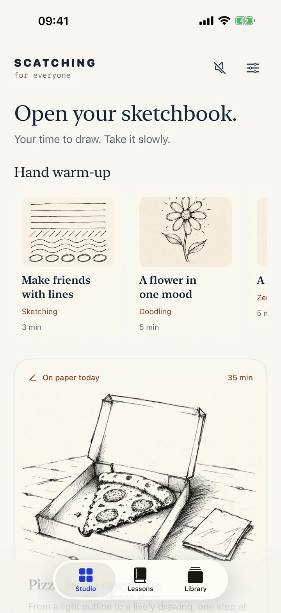
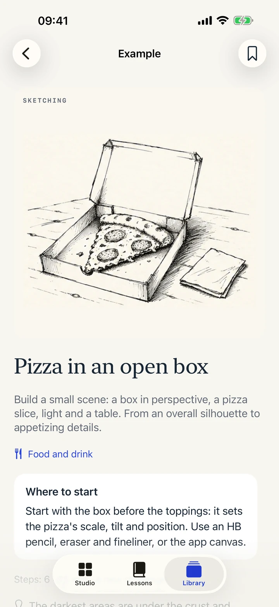
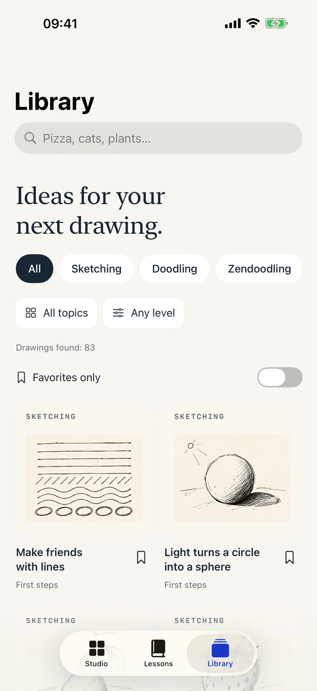

YOUR TIME TO DRAW. NO HURRY.
Open your
sketchbook.
A fineliner, a pencil and a little time for yourself. Let the app show you where to start, then turn a few loose lines into your own story on paper.
Try the pizza lesson Explore the appFor iPhone and iPad · iOS 17+ · Coming to the App Store
ON PAPER TODAY06 / 06

A little uneven.
Entirely your own.
83guided lessons
466illustrated steps
4drawing styles
16app languages
WHERE TO START. WHAT TO DO NEXT.
From the first lines
to a little scene.
Start with the big shapes, before the toppings. Choose a step to see the box, pizza slice, hatching and background come together.
Lightly sketch the tilted base and raised lid. Leave space around the box for the table.
Refine the corners, walls and lid fold. Let a few lines stay uneven: this is a sketch.
Fit a triangular pizza slice inside and mark the crust. Leave space between the slice and the walls.
Add toppings, an uneven cheese edge and short lines on the crust. Every detail can be different.
Hatch the wall and slice edge, then deepen the shadow under the crust. Keep the light above and to the left.
Add table texture, a napkin and a few final accents. Keep some lines light and broken.
In the app, each step includes an explanation and a tip on what to check.

WHAT SHALL WE DRAW TODAY?
Everyday things.
Unexpected patterns.
Quick contours, visible hatching and a little imperfection. These are the actual drawings from the updated app lessons.

A round-bellied teapot

Cat on a windowsill

Space postcard

A flower in one mood

Ribbons of flowing arcs

Fan spiral

Circles: light and dark
Food · Nature · Animals · Objects · Interiors · Places · Fantasy · Patterns · Foundations
YOUR QUIET STUDIO
The lesson beside you.
Your sketchbook in front.
Start with a short warmup, choose a subject and follow the illustrated steps. Zoom in on the drawings and return to them at your own pace.

Warmups and today’s drawing

Materials, steps and tips

Examples to spark your next idea
PAPER FIRST. EVERYTHING ELSE CAN WAIT.
Draw by hand.
Keep your own touch.
You do not need to copy every line. Look at the example, notice the shapes and draw in your sketchbook. The in-app canvas is there when you want to try an idea on screen.

- 01
A 3–5 minute warmup
Lines, arcs and simple patterns help you start without worrying about the blank page.
- 02
Just the materials you need
The materials guide covers paper, pencils, erasers and fineliners. Lessons include tips for getting ready.
- 03
A quiet background
Turn on soft, bundled Soft Lofi music whenever you like. Lessons and music work offline.
On iPad, you can draw with Apple Pencil on the built-in canvas.
FULL STUDIO
One purchase.
Many drawings of your own.
Begin with four free lessons, one for each drawing style. Browse every example in the library for free.
€4.99
Full Studio
One purchase unlocks all 83 lessons. No subscription, automatic renewal or advertising.
Start with a sample lessonThe App Store shows your local price before payment. Prices may vary by region.
Before your first drawing
I have never drawn before. Is this for me?
Yes. Start with the free warmups and simple shapes, then move on to more detailed scenes. Lessons explain where to start and what to look for.
Do I have to draw on the screen?
No. The main format is a lesson on your iPhone or iPad and a drawing in your own sketchbook. The built-in canvas offers another way to practice, with Apple Pencil support on iPad.
What works offline?
Lessons, examples, illustrated steps, the drawing canvas and bundled music. Buying or restoring access through the App Store needs an internet connection.
Are my drawings uploaded?
No. Your drawings, favorites and progress stay on your device. The app has no accounts, advertising, analytics or public gallery.
Can I restore my purchase?
Use Restore purchase in Settings with the same Apple Account. This restores eligible paid access without charging again, but does not transfer your local drawings.